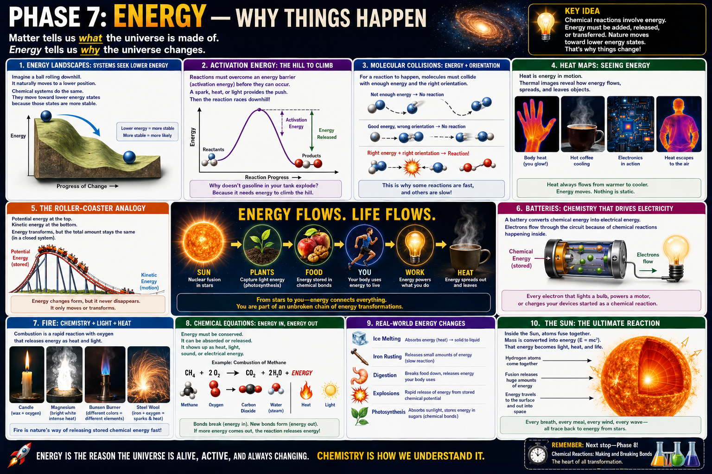

Stored possibility
A system can store energy because of position, composition, or arrangement. Chemical bonds, raised objects, compressed springs, and charged batteries all store potential energy.
Chemistry · Energy · Heat · Reactions
A lesson for Klins on why matter changes, why reactions need a push, how heat and chemical energy move, and how energy connects the Sun, plants, food, batteries, electronics, and the work done on our bench.

Systems often move toward lower-energy, more stable arrangements.
A system can store energy because of position, composition, or arrangement. Chemical bonds, raised objects, compressed springs, and charged batteries all store potential energy.
Just as a ball tends to roll downhill, chemical systems often move toward arrangements with lower energy.
When a system drops to a lower-energy state, the difference may appear as heat, light, sound, electricity, or motion.
Energy is like elevation on a landscape. A system may be sitting on a hill, holding stored potential. Once it finds a path downward, that stored potential becomes motion, heat, light, or some other form.
A reaction may be favorable and still need an initial push.
Reactants must first reach a high-energy transition state before old bonds can break and new bonds can form. The required minimum is called activation energy.
Heat, a spark, light, friction, or another reaction can provide the energy needed to cross the barrier.
Particles must collide with enough energy and the right orientation.
Molecules collide and separate without rearranging because the impact cannot overcome the activation barrier.
Even an energetic collision may fail if the reactive parts of the molecules are not aligned properly.
The right energy and orientation allow bonds to change and products to form.
Heat describes energy transferred because of a temperature difference.
Thermal energy naturally flows from a warmer object toward a cooler one until they approach thermal equilibrium.
Infrared cameras reveal surface temperature differences, making otherwise invisible energy flow visible.
Current moving through resistance converts electrical energy into thermal energy. This is why processors, regulators, motors, and resistors warm during operation.
Energy changes form while the total remains accounted for.
The roller coaster has more gravitational potential energy because of its height.
Much of that potential energy has become kinetic energy. Friction also transforms some into heat and sound.
Energy is conserved, but it is constantly transformed. Stored energy becomes motion, motion becomes heat, chemical energy becomes electricity, and light becomes chemical energy in plants.
A battery converts chemical potential energy into electrical energy.
Reactions inside the battery create a difference in electrical potential between its terminals.
When a circuit is connected, electrons move through the external path and deliver energy to a load.
The electrical energy may become light in an LED, motion in a motor, sound in a speaker, or computation in a processor.
Combustion rapidly releases stored chemical energy.
Wax vapor reacts with oxygen and releases heat and light.
Magnesium burns with intense light because the reaction releases energy rapidly.
Different flame colors can reveal combustion conditions and chemical species.
Finely divided iron reacts quickly with oxygen because of its large surface area.
Energy belongs in the reaction story even when it is not written explicitly.
If more energy is released when new bonds form than is required to break old bonds, the reaction releases energy overall.
If more energy is required than released, the reaction absorbs energy from its surroundings.
Energy transformations are everywhere.
Absorbs heat as solid water becomes liquid.
Releases energy slowly during oxidation.
Breaks food molecules down and releases energy the body can use.
Release stored energy very rapidly, producing heat, gas expansion, light, and sound.
Absorbs sunlight and stores it in chemical bonds.
Chemical energy becomes motion and heat.
Electrical energy becomes thermal energy through resistance.
Electrical energy becomes photons with relatively little wasted heat.
Much of Earth’s usable energy traces back to the Sun.
Hydrogen nuclei combine inside the Sun, and a small amount of mass becomes energy.
Solar energy travels through space as electromagnetic radiation.
Plants store sunlight in chemical bonds. Food, muscles, fuels, wind, and many forms of life activity ultimately depend on that energy flow.
Use this sequence to connect chemistry, electronics, and energy systems.
Ask where the potential energy resides: chemical bonds, position, charge separation, pressure, or strain.
Ask what starts the change: heat, spark, light, switch closure, impact, or another reaction.
Follow energy as it becomes heat, motion, electricity, light, sound, or stored chemical energy.
Notice where useful energy disperses as heat, friction, vibration, or sound.
Relate battery voltage, current, resistance, relay coils, LEDs, motors, processors, and heat sinks to energy conversion.
Energy is the reason systems do anything at all. It is stored, released, transferred, and transformed—but never simply vanishes. Chemistry explains how matter carries and exchanges that energy, while electronics gives us tools for directing it.